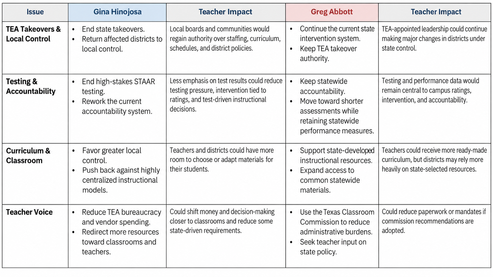
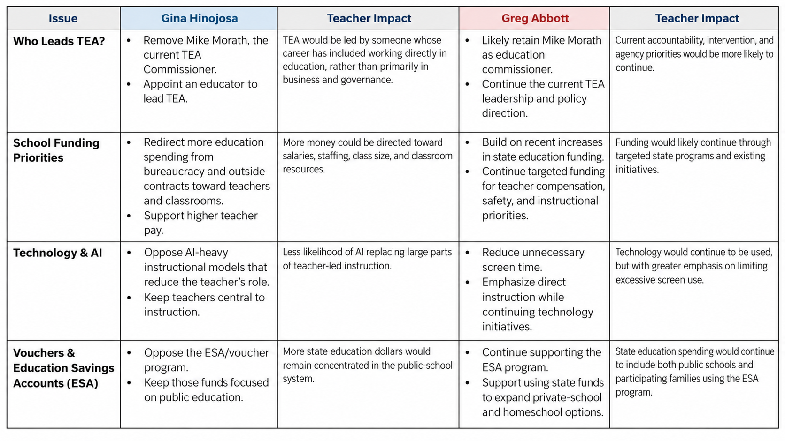

State elections can feel pretty far removed from your classroom. But this year, the outcome of the governor’s race will likely have a significant impact on your day-to-day work — from whether TEA can take over your district, to the decisions you’re allowed to make in your own classroom, to testing, curriculum, workload, technology, and funding.
The governor has an unusually important role in shaping Texas education. The governor appoints the education commissioner, proposes state budget priorities, signs or vetoes education legislation, and helps set the direction of state education policy. That makes the differences between the candidates especially relevant to educators this year.
The information below is based on documented public statements, campaign positions, and official actions available as of October 2026. It is intended to inform, not endorse either candidate.
The issues shown below are among those most likely to affect your classroom or district directly.


The issues in the second table are less immediate, but they could still shape the broader education system you work in.


The governor does not make every education decision alone. Many changes require action by the Legislature, TEA, the State Board of Education, or local school districts. But the governor has substantial influence over who leads TEA, which education priorities receive funding, what legislation becomes law, and the overall direction of state education policy.
For educators, those decisions can eventually become the rules, requirements, resources, and expectations that shape an ordinary school day. In that sense, this election is about more than state policy — it is about your classroom, your voice, and the choices that shape your work.
Early Voting: Oct. 19, 2026 - Oct. 30, 2026
Election Day: Tuesday Nov. 3